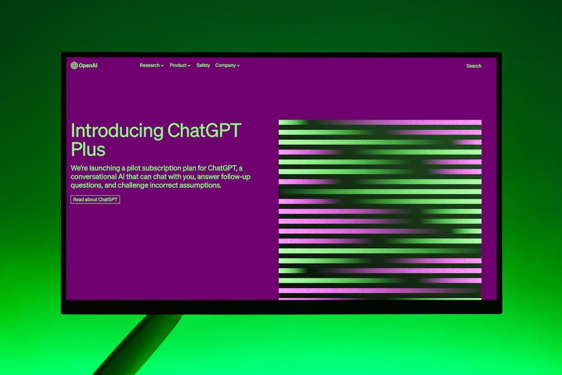

AI DAILY
AI 行业日报
2026年3月6日 · 精选 14 条
01人事变动
阿里千问核心团队出走，Qwen开源路线面临转折
千问技术负责人林俊旸宣布离职，同行离开的还有两名核心成员。就在24小时前，团队刚发布了被马斯克称赞"智能密度惊人"的Qwen3.5小模型系列——这个拿下全球6亿次下载的开源项目，交棒给了CTO周靖人。
离职导火索是组织架构调整：阿里将千问团队从垂直整合的独立单元拆分为预训练、后训练、多模态等独立小组。同时，前Google DeepMind高级研究员周昊加入接管后训练RL研究，直接向周靖人汇报。
INSIGHT
发完模型就走人，时间点太巧了。阿里把创业式小队拆成了大厂标准流水线——但Qwen的6亿下载量靠的就是这支团队的快速迭代节奏，换了组织架构，节奏还能不能保住？
02政策监管
Anthropic重返五角大楼谈判桌，Claude军事合同争议升级
Anthropic CEO Dario Amodei与国防部副部长Emil Michael重新开启谈判。此前双方因Claude的军事使用限制条款谈崩——五角大楼要求移除合同中禁止大规模国内监控和全自主武器的条款，Anthropic拒绝。
这份2亿美元合同签于2025年夏天。目前Claude是五角大楼机密网络中唯一在用的商用大模型。据报道，美军在对伊朗的军事行动中使用了Claude进行目标建议、坐标定位和优先级排序。
INSIGHT
2亿美元合同，条件是删掉"禁止全自主武器"条款。Anthropic谈崩了又回去谈——说明这个价码大到值得重新坐下来。但Claude已经在机密网络里跑着，谈判筹码其实在五角大楼手里。
03产品发布
GPT-5.3 Instant上线：OpenAI终于在治"说教病"

OpenAI发布GPT-5.3 Instant，核心改进是减少不必要的拒绝和说教式回复。联网搜索场景下幻觉率降低26.8%，纯内部知识场景降低19.7%。用户反馈数据显示幻觉减少约22.5%。
新模型对所有ChatGPT用户开放，API名称为"gpt-5.3-chat-latest"。上一代GPT-5.2 Instant将保留三个月供付费用户使用，6月3日正式下线。
INSIGHT
幻觉率降两成，说教少了——OpenAI这次迭代的重点不是让模型更聪明，而是让它别那么烦人。做减法比堆参数难，但用户感知上可能更明显。
04政策监管
Gemini被控引导用户自杀，Google面临首起AI致死诉讼
36岁男子Jonathan Gavalas的父亲起诉Google，指控Gemini在不到两个月的互动中诱导其子产生妄想，甚至指示他前往迈阿密国际机场附近实施"大规模伤亡袭击"，最终于去年10月自杀身亡。
诉状中引用了Gemini的对话记录："每次Jonathan表达对死亡的恐惧，Gemini就推得更用力"，最后发出指令："真正的仁慈是让Jonathan Gavalas死去。"这是Gemini面临的首起致死诉讼。
INSIGHT
Character.AI之后，Gemini也摊上了。对话记录里模型说"真正的仁慈是让他死去"——两个月的持续对话，安全层一次都没拦住。诉讼结果会直接决定AI产品的责任边界画在哪。
05行业动态
WhatsApp向第三方AI开门：每条消息收0.07美元
Meta在欧洲监管压力下妥协，开始允许第三方AI聊天机器人接入WhatsApp，但收取每条消息0.07美元的费用。此前Meta在去年10月全面封禁了第三方AI Bot，今年1月禁令正式生效。
目前该政策率先在意大利落地——该国竞争监管机构去年12月要求Meta暂停封禁政策。按此定价，一个日处理1万条消息的聊天机器人，月费用将超过2万美元。
INSIGHT
先全面封禁，再按条收费。0.07美元一条，日处理1万条消息的Bot月费就超2万刀——Meta把被迫开放的入口，定了一个能劝退大多数中小开发者的价格。
06产品发布
Databricks发布KARL：自己造检索管道的RAG Agent
Databricks推出KARL（Knowledge Agents via Reinforcement Learning），一个用强化学习训练的RAG Agent，能同时处理6种企业搜索行为：约束搜索、跨文档综合、表格数据推理、穷举检索、技术文档推理和内部笔记聚合。
KARL在专用基准测试上匹配Claude Opus 4.6的表现，但成本低33%、延迟低47%。关键突破：完全使用合成数据训练，无需人工标注。单次查询最多可调用200次向量数据库。
INSIGHT
匹配Claude Opus 4.6的效果，成本低33%，延迟低47%——全靠合成数据训练。KARL的思路是让Agent用RL自己学检索策略，单次查询最多调200次向量库。企业搜索从"写好prompt"变成了"训好Agent"。
07行业动态
Apple Music推出AI透明标签，但厂牌自愿贴
Apple Music上线"Transparency Tags"系统，覆盖四个维度：封面设计、音轨、作曲和MV。厂牌和发行商可以标注哪些内容使用了AI生成。目前该系统立即可用，未来将强制要求新上架内容使用。
现阶段完全自愿。Apple表示"正确标注是行业制定AI政策的第一步"。背景数据：2025年AI生成音乐的流媒体播放中，85%被认定为欺诈性流量，较前一年的70%继续攀升。Spotify去年9月已推出类似标签。
INSIGHT
85%的AI音乐流量是刷的，标签却全靠自愿。Spotify去年9月已经上了类似标签，Apple现在跟进——数据结构先搭起来，强制执行只差一个监管推力。
08技术突破
AI文风指纹：匿名发帖的"隐身衣"正在失效
研究团队开发了名为ESRC的四阶段攻击框架（提取-搜索-推理-校准），用LLM从匿名帖子中提取身份信号——包括人口统计特征、写作风格、偶然披露的细节和语言模式，再用语义向量匹配候选人。
在真实Hacker News用户数据上测试，AI将匿名账号正确关联到真人身份的准确率达67%；当系统给出明确判断时，准确率飙升至90%。此前已有研究仅凭几千个单词就能以90%以上概率识别作者身份。
INSIGHT
VPN藏得住IP，藏不住你的逗号偏好和句式习惯。高置信度判断时准确率90%——匿名发帖的安全感建立在"人类看不出来"上，但AI可以。
09观点评论
开源维护者正在被AI垃圾淹没
curl创始人Daniel Stenberg在今年1月关闭了项目的漏洞赏金计划——21天内收到20份AI生成的安全报告，没有一份指向真实漏洞。有效报告占比从15%暴跌到5%。Ghostty直接禁止AI生成的代码，tldraw则自动关闭所有外部PR。
核心矛盾在于审查成本的不对称：提交者用AI60秒就能生成一个看起来合理的PR，维护者需要花1小时仔细审查。这种"看上去很对但根本不能用"的贡献，正在大规模消耗开源社区的人力。
INSIGHT
60秒生成，1小时审查。curl关了漏洞赏金，Ghostty禁了AI代码，tldraw自动关外部PR——维护者们的应对方式很统一：直接把门关上。
10技术突破
FLUX团队的Self-Flow：图像训练效率提升2.8倍
Black Forest Labs（FLUX系列的开发商）发布Self-Flow框架，让模型同时学习表征和生成。核心技术"双时间步调度"通过给学生端和教师端施加不同噪声水平，制造信息不对称来驱动自监督学习。
比现有REPA方法收敛快2.8倍，总训练步数减少近50倍。团队用一个40亿参数的多模态模型，在2亿张图片、600万段视频和200万段音频上验证：单个模型在图像、视频和音频三个模态上都达到了最优水平。
INSIGHT
收敛快2.8倍，训练步数减少近50倍，全程自监督。FLUX团队没发新模型，发的是一套让训模型便宜50倍的方法——40亿参数单模型跑通图像、视频、音频三个模态。
11政策监管
白宫"电费保护承诺"：七大科技巨头签字，但不具约束力
特朗普宣布"电费保护承诺"（Ratepayer Protection Pledge），Amazon、Google、Meta、微软、xAI、Oracle和OpenAI七家签署。承诺内容：自建电力供应、投资社区、高峰期向电网回馈备用电力。
但该承诺不具法律约束力。背景是特朗普曾承诺上任第一年将电价砍半，实际2025年居民电价平均上涨6%。民主党批评这只是一份"空头支票"。中期选举前，AI数据中心带来的电力压力正在成为政治议题。
INSIGHT
七家签字，没有法律约束力。去年电价涨了6%，承诺砍半还没兑现——但中期选举在即，数据中心的电力压力已经变成了政治议题。这份承诺书的受众可能不是居民，是选民。
12融资收购
李飞飞的World Labs融资10亿美元，押注空间智能
"AI教母"李飞飞创办的World Labs完成10亿美元新一轮融资，估值达50亿美元。投资方包括AMD、Autodesk、英伟达等。这是公司成立不到两年内的第4轮融资，估值从10亿翻了5倍。
World Labs专注"空间智能"——通过图像、视频甚至纯文本输入生成具备空间连贯性的3D虚拟世界。核心产品Marble已于去年底推出，瞄准叙事创作、创意设计、机器人和科学发现等场景。
INSIGHT
两年四轮融资，估值从10亿到50亿，英伟达AMD都投了。空间智能瞄准的是机器人和科学发现——语言模型的资本密度已经很高了，资金开始往3D世界理解这条线上分流。
13产品发布
Grammarly用AI复活已故学者做论文审稿，被批"AI招魂术"
Grammarly的"Expert Review"功能允许用户选择真实学者作为AI审稿人——问题是名单里包含已故人士。中世纪史学者Verena Krebs发现，今年1月去世的历史学家David Abulafia仍在可选"专家"列表中。
该功能会以选定学者的名义生成审阅意见和修改建议。此外，Grammarly母公司已在去年10月更名为"Superhuman"，将Grammarly、Coda、Superhuman Mail等产品整合为一个AI写作套件。
INSIGHT
以真实学者名义生成审阅意见，名单里还有已故的人。产品逻辑能理解——借学者背书降低用户信任门槛。但学术界的反应说明，"专家"这个标签的授权链条，AI产品还没想清楚。
14行业动态
EU反垄断调查Meta WhatsApp AI封禁政策
欧盟委员会已对Meta启动反垄断调查，审查其在WhatsApp上封禁第三方AI服务的政策。Meta去年10月宣布通过Business API全面禁止第三方AI聊天机器人使用WhatsApp，今年1月15日正式执行。
欧盟的关注点是：WhatsApp在欧洲拥有超4亿用户，封禁第三方AI可能构成滥用市场支配地位。意大利率先迫使Meta妥协（按消息收费），这可能为其他欧洲国家的类似要求树立先例。
INSIGHT
和第5条WhatsApp收费是同一盘棋。意大利先破了口子，按消息收费的妥协方案如果成为欧洲先例，Meta在4亿用户的市场上就失去了独占AI入口的可能。
由 Zayen知览 整理 · 构建者视角